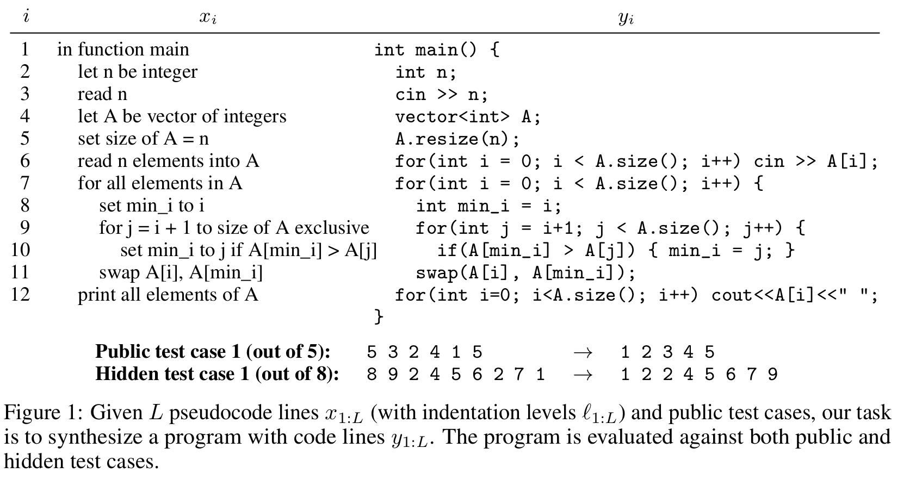
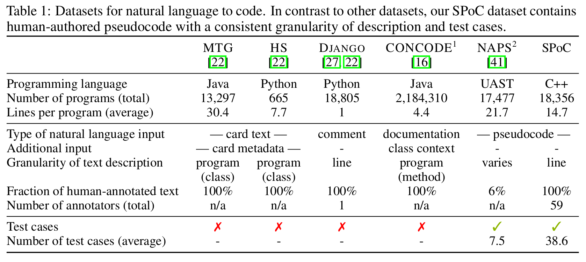
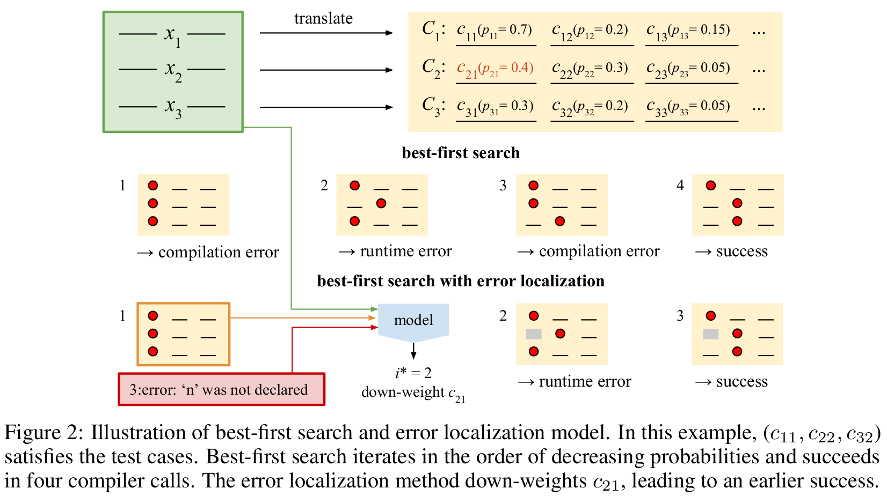

SPoC: Search-based Pseudocode to Code
Abstract:
We consider the task of mapping pseudocode to long programs that are functionally correct. Given test cases as a mechanism to validate programs, we search over the space of possible translations of the pseudocode to find a program that passes the validation. However, without proper credit assignment to localize the sources of program failures, it is difficult to guide search toward more promising programs. We propose to perform credit assignment based on signals from compilation errors, which constitute 88.7% of program failures. Concretely, we treat the translation of each pseudocode line as a discrete portion of the program, and whenever a synthesized program fails to compile, an error localization method tries to identify the portion of the program responsible for the failure. We then focus search over alternative translations of the pseudocode for those portions. For evaluation, we collected the SPoC dataset (Search-based Pseudocode to Code) containing 18,356 programs with human-authored pseudocode and test cases. Under a budget of 100 program compilations, performing search improves the synthesis success rate over using the top-one translation of the pseudocode from 25.6% to 44.7%.
If you find this work useful, please consider citing it:
@article{spoc2019,
Author = {Sumith Kulal and Panupong Pasupat and Kartik Chandra and Mina Lee and Oded Padon and Alex Aiken and Percy Liang},
Title = {SPoC: Search-based Pseudocode to Code},
Year = {2019},
Eprint = {arXiv:1906.04908},
}
Example usage

Comparison with other datasets

Error localization models to guide search

Challenges in generating full programs

Performance of various proposed methods